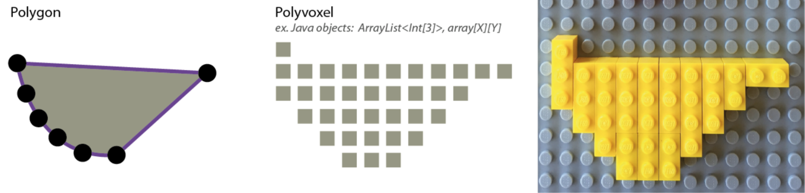

ABOUT
What is this site? What is GeoBits?
My name is Nina Lutz and I'm a sophomore at MIT studying Electrical Engineering, Computer Science, and Design. I am an undergraduate researcher, or UROP at the MIT Media Lab Changing Places Group, where I work with Ira Winder and the CityScope team on solving spatial problems via intervention systems.
CityScope is an intervention system with a Lego based Tangible User Interface (TUI) and Tangible Information Matrix (TIM). We use Legos because they invite people to play with and interact with our platforms to make interventions. Also, Legos are a convenient and standardized grid system. Each Lego is made up of a ratio of studs and together on our table they make up a grid of Lego squares and the studs within these squares.
We essentially translate geospatial data to Lego, because the data contains things like points (think a shop or house), lines (roads, sidewalks, etc), and polygons (parks and lakes and zoning areas).
Figure 2. A typical GIS polygon construct (left) is translated into a TIM-compatible voxel and Lego construct (right). Image Credit: Ira Winder
In computer science, this process is called rasterization, which is breaking up big systems of stuff (usually images or maps) and into a grid of discrete objects. But process is usually just a few functions in our code to handle the inputs so we can use them in our system, so there's no real standardized, elegant, or generic method. We are also often limited by the data we happened to snag for the model and don't have the metadata associated with those geospatial locations.
This is where GeoBits comes in
The goals of GeoBits are to...
1. Rendering beautiful, interactive geospatial data at a global to pedestrian scale.
2. Layering different forms of information and metadata associated with this geospatial data.
3. Transforming this data into a variety of coordinate systems for modeling purposes.
4. Allowing users to define sandboxes to layer different intervention models on.
5. Documenting all this in an approachable way for programmers and non programmers to understand my development process and geospatial data.
6. Explore new models in these systems, like gender accesibility in cities, pedestrian flows, delivery logistics, and many many more.
7. Making an awesome tangible user interface (TUI) and tangible information matrix (TIM) that is at the MIT Media Lab (if you ever want to see it).
I'm excited for this project, and this site serves as a live updated, documentation of my development process.
This website includes a journal, docs, and resources page. The journal is informal, live documentation by me. Think of it as my lab notebook. Docs are were more technical and complete solutions to problems go. Resources are where I put contributers, data sources, and sources I used to learn how to do all this.